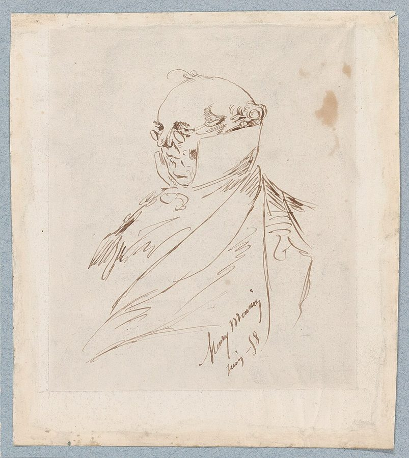

god forbid
… and certainly, god forbid, not a …
（更）千万别是
插在句中，意思是「但愿不是，那可太糟了」。作者自嘲：这书可别被当成科学报告。
这一页是全书的门口：2004 年第二版的序，和第一版就有的前言。序里作者回头谈这本书，回应读者来信和几种误读，夹着上电视的趣事；前言是正文的总纲，从一个他自造的词出发，绕到挠鼻子求雨的原始人、在云里看见清真寺的诗人，再摆出一张对照表，交代全书要讲什么、为什么拿市场举例。读的时候抓一条线：一个漂亮的结果，到底能说明多少本事。
这是全书的第一页，前面没有别的章。正文之前还有谢辞和章节摘要，本站不讲；章节摘要给每章写了几句提要，有几句会提前点到后面的故事，想先自己读的话可以跳过。序是 2004 年写给读过第一版的人的，答的是他们的误读；前言是第一版就有的总纲。第一次读这本书，可以先读前言（§11），再回头读序。§3 作者还说了他自己认为哪两章是全书的中心。
§5 作者说这本书是一串逻辑思想实验，不需要数据。说「这有可能是运气」确实不需要数据；但要判断一个具体的人有几分运气，金融学后来正是拿数据来分的。读的时候分清这两件事，详细的在页末。
一个人干得很漂亮，我们凭什么判断那是本事还是运气？
读的时候带着这几个问题。不用先找答案，读完回来对照「检查一下理解」。
这一页是两篇拼起来的。序（§1–§6）是第二版加的，作者回头谈这本书：怎么写的、第二版添了什么、他说的「概率」是什么、读者来信，读着像他在饭桌上聊天；到 §5 才进入实质，回应几种误读；§6 又换成上电视、上电台的趣事和一段为文风辩护的话。
序和前言之间隔着谢辞和章节摘要，本站跳过。前言（§11）才是正文的起点，一节两千多词。它从一个定义出发，绕到原始部落、文学教授和两位法国诗人，读到这里会觉得「突然跳到诗人」；接着摆出表 P.1，解释为什么拿市场举例，再插进一个十九世纪的漫画人物，最后讲两种人性观，以全书三部的预告收尾。
这一页是原书和译本正文前的两篇：第二版的序（§1–§6）和前言（§11），一共 7 节；谢辞和章节摘要不在这一页。粗体是本站给的节名，后面是档和译本字数；下面是译本的小标题和这一节在译本电子书里开头的几个字（搜它就能跳过去），再下面是英文原文的开头。「先读」是这一页的骨架，「有空」好看、跳过不丢线，「可跳过」读不读都行。读完打个勾。
先把这一页用到、作者默认你懂的几个概念讲一遍。讲的是概念本身，作者拿它推出什么，读原书时自己看。别页讲过的概念，点链接过去看。
「概率」至少有两种意思。一种说的是世界本身：一枚均匀的硬币抛很多次，正面大约占一半。这是频率，也叫物理概率，骰子、轮盘、教科书上的题都是这一种，规则事先摆明，算得出来。
另一种说的是我们知道多少：「这个版本下周能上线，我有七成把握」。没有一万次重复可以数，这个数表达的是把握有多大，叫认识上的概率，贝叶斯统计主要处理这一种。真实世界的问题多半是后一种：没人告诉你骰子有几面，连问题本身都得先猜出来。
在这一页：§3 作者说他书里的「概率」指什么，对照这两种看；§11 的表 P.1 里也有这一对词。
欧洲人长期以为天鹅都是白的，直到 17 世纪末荷兰探险者在澳大利亚见到黑天鹅。哲学里常拿它说明：见过再多白天鹅，也证明不了「天鹅都是白的」，一只黑的就能推翻。
作者借这个词指意料之外、影响很大的随机事件，可以是坏事，也可以是好事。这本书里他用得比较宽，常和「稀有事件」混着用。2007 年他写了一本书就叫《黑天鹅》，把它定得更窄，列了三条：事先看不出任何迹象，影响极大，事后人们会编出解释、让它显得本可预料。读这本书时，按宽的那个意思理解就行。
在这一页：§4 读者来信里第一次出现，§6 说它可好可坏，§11 预告第一部会讲。另见稀有事件。
没买彩票一定中不了奖，所以买彩票是中奖的必要条件；但买彩票不会「导致」中奖。必要条件只说「没有它不行」，不说「有了它就行」。
逻辑课里有一个常见的错叫肯定后件：已知「下雨，地面就会湿」，看到地面湿，就断定「下过雨」，其实洒水车也能把地弄湿。换到人身上：「有好品质的人都成功了」推不出「成功的人都有好品质」，箭头不能倒过来。下图是另一个常见的情形：成功的人都勤奋，但勤奋的人里，成功的只是一小块。
在这一页：§5 作者用这对区分回应读者的误读，并拿两本讲百万富翁的畅销书当例子（另见幸存者偏差）。
打牌的人有一条老规矩：别拿结果评判打法。一手牌打得糟、碰巧赢了，不说明打得好；打得对、碰巧输了，也不说明打错了。结果里混着运气，局数越少，运气占得越多。
作者把这个现象落到人身上，造了一个词：运气好得不成比例，却把成功归给某个很具体的理由（眼光、勤奋、一套方法）的人。他可能真心这样相信，作者也说这种错觉常常是故意的，那就够得上叫江湖骗术；外人也难分辨，因为一次漂亮的成绩，可能出自本事，也可能出自运气。下图从前言的对照表里挑了四对，是这个混淆的几种样子。
在这一页：§11 第一段给出这个定义，表 P.1 是它的展开。噪声和信号见噪声和信号。
这是政治思想里的一对说法。经济学家 Thomas Sowell 1987 年的《观念的冲突》把人性观分成两种：一种认为人可以靠理性、教育和好制度改造得越来越好；另一种认为人的局限是天生的，制度只能顺着这些局限来设计。心理学家 Steven Pinker 2002 年的《白板》把它们叫作乌托邦观点和悲剧观点。
「悲剧」在这里不是悲观、可怜，是古希腊悲剧的那个意思：人有改不掉的缺陷，只能带着它行事。程序员可以这样想：一派相信写好规范、多做培训就能消灭 bug；另一派假定人一定会犯错，所以加类型检查、代码评审和自动测试。
在这一页：§11 后半，作者给两派各开了一张名单，并说自己站在哪一边。
按在书里出现的顺序排，标题前是节号。只讲到读懂这一页需要的程度。
这本书 2001 年初版，出版社是 §5 提到的 Texere；2004 年出增订第二版，读者手上的繁体译本据的是第二版。§1 作者说第二版篇幅增加了三分之一以上，第 11 章加得最多，还在书后补了按页码排的注释和书目（A Trip to the Library）。正文里没有注号：想查某句话的出处，要到书后按页码找。比如 §2 说「半个世纪前」的研究，书后的注指的是心理学家 Paul Meehl 1954 年比较医生的判断和统计公式的那本书。
作者在 §3 拿这两人代表两种思考方式：一个是模糊、随性但带批判的判断，一个是追求确定性的形式推理。书后的注里他还补了一句：笛卡儿本人起初是个怀疑论者，后人说的「笛卡儿式」头脑另是一回事。休谟（David Hume，1711–1776）是苏格兰哲学家，提出归纳问题：看过一千次太阳升起，凭什么断定明天还会升起。第 7 章才正式讲，见归纳问题。
美国证券交易委员会（SEC）是管证券市场的政府机构，被它调查是金融从业者的大麻烦，§4 那位弗吉尼亚读者就碰上了。作者说自己常被看成打破偶像的人，原以为会收到「你凭什么评判巴菲特」的骂信。卡尼曼在 §4 出现，是因为作者为一位读者去读了遭受重大打击后人怎样适应的研究，他说这个领域也以卡尼曼的工作为主。
剑桥联合会（Cambridge Union）是剑桥大学的辩论社，历史有两百年，辩论常上报纸。作者那场的辩题里的 City，指伦敦金融城，即伦敦的金融区，相当于纽约的华尔街；hotshot 是风头正劲的红人。
《邻家的百万富翁》（The Millionaire Next Door，Thomas Stanley 和 William Danko，1996）调查美国的百万富翁，说他们多半节俭、勤奋、过着普通日子，畅销多年；Stanley 2000 年又写了《百万富翁的头脑》（The Millionaire Mind）。作者在 §5 批的是后一本，前一本留到第 8 章。
作者点名称赞的四位主持人都在非营利或公共媒体：NPR 是美国的全国公共广播电台，PBS 是公共电视网，WNYC 是纽约的公共电台，BBC 是英国广播公司。原书拼作 Kojo Anandi 的那位，应是华盛顿公共电台 WAMU 的 Kojo Nnamdi，他的同名节目播了 23 年，2021 年停播。思科（Cisco）是做网络设备的公司，2000 年前后科技股泡沫里的明星股，主持人插进来的就是它当天的新闻。
书里那句「我在云里看见清真寺」，兰波的诗里找不到原句。最接近的是《地狱一季》（1873）里〈言语炼金术〉一节：他说自己习惯了简单的幻觉，在工厂的位置看见一座清真寺。是工厂，不是云；作者在 §1 说过他只引记得住的话，这里多半是凭记忆。生平也和书里有出入：兰波 1891 年因膝部的肿瘤离开东非回到马赛，截去右腿，同年 11 月死在马赛的医院，37 岁。书里说的染上梅毒、遭奴隶贩子虐待，本站没有查到可靠的出处。

普吕多姆先生是法国漫画家、演员 Henry Monnier（1799–1877）笔下的人物：一个挺着肚子、满口陈词滥调的巴黎小市民，Monnier 自己画他，也自己上台演他。作者用的是他那把剑的典故：既要保卫共和国，又准备在它走偏时攻击它。
两派名单里，皮尔士（Charles Sanders Peirce，1839–1914）是美国哲学家、逻辑学家，实用主义的创始人之一，生前不得志；Herbert Simon 提出「有限理性」：人没法把所有选项算清楚，只求够好。名单里的 Popper、Hayek、Soros，第 7 章还会出现。
读英文原文时值得停一下的词和句：交易员的行话、作者的反话和双关、熟词生义。灰色斜体是原句里连续的几个词，在英文电子书里搜它就能找到；标「每个字都认识」的，是每个词都眼熟、合起来意思却变了的，最容易读错。点「记下」收进词本。
对着译本读这一页时，下面这些地方会把人读歪。方框里是译本的原句，在译本电子书里搜它就能找到；灰色斜体是英文原文那一处。只收意思错了、反了、漏了的，措辞上的出入和台湾用语不收。全书的勘误汇总在译本勘误。
… Scientists investigated half a century ago …
译本：「科學家研究了半個世紀前」
原文是说：半个世纪前科学家就研究过「专家不从自己过去的失败里学习」这个现象（书后的注指 Meehl 1954 年的研究）。译本断句让人以为研究的是半个世纪前的事，研究本身反倒没了年代。
… it is tenaciously qualitative and literary …
译本：「機率是極為計性和文學上的東西」
qualitative 是「定性的、质性的」，和紧跟着的 quantitative（定量）相对。「計性」读着像「计量性」，意思正好弄反：作者说他书里的概率不靠算数，靠定性的、文学式的理解。
… progressively felt good for acting stoically …
译本：「慢慢覺得淡泊名利的日子很好」
原文说这位读者以斯多葛的态度承受了一连串打击，渐渐因此好受起来。斯多葛讲的是坦然面对命运，第 14 章还要专门讲；读译本会以为他看破了名利、爱上清贫的日子。
… Most City Hotshots are Lucky Fools …
译本：「大部分的都市大人物都是幸運的傻瓜」
大写的 City 是伦敦金融城。辩题说的是金融城里那些风光的交易员、银行家多半是幸运的傻瓜，不是泛指「都市里的大人物」。读译本会以为这场辩论在说名人。
… another even more foolish book called …
译本：「書名叫《有錢人想的和你不一樣》」
原文这本书是 Thomas Stanley 2000 年的 The Millionaire Mind。这个中文书名在台湾属于另一本畅销书：T. Harv Eker 的 Secrets of the Millionaire Mind（大块文化 2005 年出版）。拿这个书名去找，会找到另一位作者的书。
… I doubt that my neighbor’s success …
译本：「所以他的成功不帶運氣」
原文是：我不信邻居的成功里一点运气都没有，也就是认为多少有运气。中文「我懷疑……不帶運氣」很容易读成「我猜他的成功不带运气」，再加上「因為……所以」，意思正好反了。
… produce someone with his track records …
译本：「成功記錄純靠運氣的人」
原文是：一大群随机投资人里，几乎必然会冒出一个纯靠运气、做出和巴菲特一样记录的人。译本丢了「和他一样的记录」，成了泛泛地说「会有人靠运气成功」，论证的分量轻了很多。
… More than half a million readers later …
译本：「有了超過十萬的讀者後」
half a million 是五十万。原文说第二版时已有五十多万读者，译本写成十万，少了五倍。
… died anonymously in a Marseilles hospital …
译本：「成了無名屍」
anonymously 在这里是默默无闻、没什么人知道他。「无名尸」是身份不明的尸体，兰波死时身份并无疑问。作者要说的是：诗人死得寂寞，他留下的象征主义却已经流行开了。
… it is the specialist who is the …
译本：「除非是傻瓜中的傻瓜專家才會這麼做」
原文是：人人低估随机性，这点本来不值得写一本书；值得写，是因为最大的傻瓜偏偏是专家。译本读成「只有傻瓜专家才会为这写书」，把矛头从专家身上移开了。
… Consider the left and the right …
译本：「來看看表P.1的上欄和下欄」
原文说左栏和右栏；译本的表 P.1 本身也是左右两栏，正文却说上栏、下栏，对着表会找不到。「上欄」就是左栏（运气、随机、噪声……），「下欄」就是右栏（技能、决定论、信号……）。这一节后面几处同样这样换。
… and helped by complexity and …
译本：「得益於深奧（complexity）」
complexity 指复杂性理论，研究许多简单个体凑在一起怎样冒出复杂的行为，和后面的混沌理论是一对，都是 1980–90 年代的热门学问。「深奧理論」读不出这是一门学科。
… standard error or a clue about …
译本：「沒有非常了解標準差」
标准误说的是：拿样本估计一个数时，这个估计本身有多不准。标准差说的是数据本身散得多开。作者怪科学家不清楚自己的估计有多大误差，不是不懂数据的离散。
… it is the simplification that is dangerous …
译本：「簡化就會帶來危險」
原文是：不管你多信奉「保持简单」，危险的恰恰是简化。译本说成「只要你相信……简化就会带来危险」，像是危险取决于你的态度；原意是简化本身危险，信不信都一样。
读完这一页再看。下面是作者在序和前言里的主张，由本站按主张之间的逻辑重新组织，不按原书的顺序；每条后面是节号，拿不准就回书里那一节再读一遍。
他给「幸运的傻瓜」下定义：运气好得不成比例，却把成功归给某个很具体的理由的人。表 P.1 把这种混淆摊开，他说全书讲的就是把左栏当成右栏。反方向的错（把真规律当成噪声）他认为（in my opinion）代价没那么大，所以不多谈。
§11他说第一版常被误读成「成功者全凭运气」，剑桥辩论的「大部分」也被传成「所有」。他澄清：勤奋、准时、坚持是成功的必要条件；本事当然算数，只是在高度随机的行业里，它的分量比在牙科这类行业轻。机会窗口来了要抓住。
§5从「好品质的人都成功」推不出「成功的人都有好品质」，这是肯定后件。他拿 Stanley 的书举例：百万富翁都勤奋、爱冒险，可失败的创业者也勤奋、也爱冒险。他凭直觉（My intuition）反过来读：百万富翁要是和常人差不多，说明运气起了作用。
§5他说书里的概率是定性的、文学式的，从休谟的归纳问题出发，核心是想到世界本来可能不同。他也不提供数据，说书是一串逻辑思想实验，只要证明「天才」之外另有解释就够了。一大群随机投资人几乎必然（almost necessarily）冒出巴菲特式的记录，但他说明自己不是说巴菲特没本事。
§3 §5他相信（I believe）把运气当本事的毛病在市场里最普遍、危害最大，所以拿自己最熟的市场当实验室。人性观上他站悲剧派：缺陷改不掉，要用计谋绕开，不靠说教。依据是他自己多年和情绪较劲、只有绕开情绪才成功的经历。
§11合起来：看到一个漂亮的成绩，先问一句「运气换一换，会怎样」。作者不是说本事不重要，而是说在随机的行业里，结果能证明的东西比我们以为的少，人又天生爱把结果读成本事。
This book is about luck disguised and perceived as nonluck (that is, skills)— §11。本站译：这本书讲的是伪装成、又被看成不是运气（也就是本事）的运气。
前言的第一句，像一条定义。关键是 disguised and perceived 两个词：运气自己穿上了本事的外衣（disguised），旁人也就这样看它（perceived），两边合谋。nonluck 是作者硬造的反义词，读着别扭，正好提醒你「本事」在这里只是「不是运气」的另一个名字。译本：「偽裝成和被視為非運氣」把两层都译出来了。
the idea here was that “it is more random than we think” rather than “it is all random.”— §5。本站译：这里的意思是「比我们以为的更随机」，而不是「一切都是随机的」。
这是作者在为自己辩解，口气有点无奈：他刚说完大脑爱「全有或全无」地想问题，自己的书就被这样读了。关键是 more 和 all：差的是程度，不是有无。读这本书最容易犯的错，就是把它读成后一句。
这本书 2004 年出第二版，书里讲的多是 1980–2003 年的事。下面挑出这一页里能被后来的研究或事情检验的说法，分「书里 / 当时 / 今天」几栏，并给一个结论。结论判的是标题里「书里的说法：」后面那一句。全书的这一节汇总在今天怎么看。
读完作者的主张，再看它站不站得住。每一块摆出三样：主流怎么看，作者怎么看，本站的评论。最后一句是本站对这一页的总体判断。
主流看法：金融学界正是拿数据来分运气和本事的。Fama 和 French 2010 年在《金融杂志》上的做法和作者的思想实验很像：用真实数据模拟出一大批只靠运气的「假基金」，再和真实的主动基金比。结果是扣掉费用后，能拿出够本业绩的基金很少；把费用加回去，两头的尾巴里确实有真本事和真差劲的。
作者的看法：书是一串逻辑思想实验，逻辑不需要实证验证，只要说明「他是天才」之外另有解释就够了；没有逻辑的统计会错，没有统计的逻辑不算错。§5
本站的评论：作为存在性的证明，这一招很硬：人群够大，就会冒出运气造成的漂亮记录，所以「记录好」本身证明不了本事。但它只回答「可能」，不回答「多大可能」：一个具体的人是哪一种，要看记录多长、同行多少、赚钱的道理说不说得通，这些都能查数据。他说的「往返谬误」对了一半。
主流看法：「必要不等于充分」是逻辑课的基本功，作者在书后的注里引的心理学教材说，相当多的人会犯肯定后件的错。只拿成功者找共同点、不看同样特点的失败者，统计上叫缺了对照组，也是幸存者偏差的一种（第 8 章细讲）。
作者的看法：勤奋、坚持是成功的必要条件，但不导致成功；他凭直觉认为，百万富翁要是和常人差不多，说明运气起了作用。§5
本站的评论：逻辑那一半无可挑剔，是这一页最该带走的工具。直觉那一半要打折扣：百万富翁和常人相似，也可能只是因为测的特质（童年智力）本来不是关键，未必说明运气大。作者自己标了 My intuition，这一句和他批评的书一样没有数据。
主流看法：乌托邦和悲剧两种人性观是 Sowell 1987 年、Pinker 2002 年用过的分法，作者在书后的注里注明了出处，还承认这条线没那么清楚。行为科学的主流做法介于两派之间：承认偏误难改，所以设计环境；也做训练和反馈，「今天怎么看」里专家预测那张卡说明，有反馈时人能学。
作者的看法：我们改不了缺陷，只能用计谋绕开；他最瞧不起说教者，认为给人忠告等于以为理智管得住行为。§11
本站的评论：「绕开」比「说教」现实，这是作者说得最有用的一点：交易员事先定好止损，程序员加自动测试，都不靠临场的意志力。但把卡尼曼、哈耶克、索罗斯放进同一阵营，是修辞上的归类；「完全不对」也说过头，后来测出来，计谋的效果并不大，训练和反馈有时也管用。
本站的总体看法：这一页是全书的使用说明：「比我们想的更随机，不是一切都随机」「必要不等于原因」「运气常被当成本事」三件事值得一直带着。作者说不需要数据，那是在为一个存在性的论证辩护，判断具体的人还得看数据。人性观那段立场鲜明，名单和「完全不对」要打个折扣。
先在心里答，再点开。答错的那题，回书里把对应那一节再读一遍。
不是原因，只是必要条件：不去买一定中不了，去了也多半不中。作者说勤奋、准时、坚持也是这样，没有它们难成功，有了它们不保证成功。
缺了同样勤奋、同样爱冒险，却没发财甚至破产的人。作者说，拿破产的人做同样的研究，也会发现他们爱冒险：冒险是大成功的必要条件，也是失败的必要条件。
「大部分是幸运的傻瓜」承认有真本事的人，只说运气被高估了；「所有」等于说本事不存在。作者的主张是前一句，他说被读成后一句，正是大脑「全有或全无」的毛病。
是承认我们的知识不确定，想办法对付自己的无知；核心是想到本来可能发生别的结果，世界本可能不同。现实里没人告诉你轮盘上有几个格子。
把经济繁荣归功于美联储降息，把公司的成功归功于新总裁上任，还有书店里那些讲自己怎样成功的传记：都是把碰巧挨在一起的两件事读成因果。
每年押对的机会是一半，连对十年是 1/1024，一万人里大约 10 个。这十个人有一份十年全对的记录，却全凭运气，这就是作者说「一大群随机投资人」里几乎必然冒出漂亮记录的意思。
用一句话说这一页：
想一想：你自己或身边的一次成功（一次升职、一个上线顺利的项目、一笔赚钱的投资），如果运气稍有不同，结局会怎样？你平时向别人讲这件事时，说的是哪些原因？
读过又忘了，从这里想起来。挑的是这一页最值得记住的故事和说法，不按原书顺序；每条后面是节号，想细看就回书里那一节。全书各页的这一节都收在全书回顾。
一句话：这本书讲的是被当成本事的运气：成绩漂亮，不等于本事大。
作者拿兰波「在云里看见清真寺」说明人天生爱在随机的形状里读出意义：原始人挠鼻子求雨，现代人把繁荣归功于降息。
§11剑桥辩论上，作者的辩题是金融城的红人大多是幸运的傻瓜，传来传去成了「全都是」。他说自己的意思是比想的更随机，不是一切都随机。
§5勤奋、准时、干净的白衬衫是成功的必要条件，就像去彩票店是中奖的必要条件，但它们不「导致」成功。
§5一档电视节目想请他讲「分析师只是随机预测者」，条件是先推荐三支股票。他没去，后来觉得错过了一个恶作剧：随便挑三支，再编一套好听的理由。
§6漫画人物带着一把剑，既保卫共和国，也准备在它走偏时攻击它。作者说这本书对科学也一样：保卫科学，攻击走偏的科学家。
§11